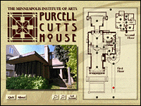
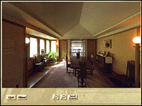
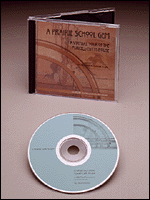

"A Prairie School Gem: The virtual tour of the Purcell-Cutts
House" CD-ROM
for Macintosh and Windows.
This is a node playable with Apple
QTVR player.
Tour the beautiful Prairie School style Purcell-Cutts house with the click of a mouse! Experience the intimacy and detail of this innovative 1913 home. Using state-of-the-art Quicktime Virtual Reality technology and an interactive floorplan, this new CD-ROM allows you to control the flow, direction and timing of your tour.

When visiting the Purcell-Cutts house by mouse, you begin at the front
door; the interactive floorplan allows you to choose where you go. You
simply click on a hot spot and you will be transported there - living
room, kitchen, a bedroom. Then, as though you are standing in the room,
you can turn in a 360 degree range.

You can zoom in and out to view details of the house more closely. Click on another spot and go through a doorway and move into the next room.
A Prairie School Gem was developed for the MIA by the museum's Interactive Media Group with technical assistance from Macromedia Technologies, Incorporated.
System requirements:
Macintosh: 68040 processor (Power PC recommended), 8 MB RAM
(16 MB recommended), 1 MB free disc space, double-speed CD-ROM
Quicktime 2.0 (included on CD), System 7.0 or higher, monitor display of 256 colors (thousands recommended)
Windows: 4 MB of RAM (8 MB recommended), double-speed CD-ROM drive,
2 MB free disk space, Quicktime 2.0 (included on CD), monitor display of 640X480 and 256 colors (thousands recommended)
Price: $19.95 plus $3.00 (shipping and handling).
Available at the Museum Shop,
or e-mail to markj@artsMIA.org.
For more information call (612) 870-3100, or toll-free (888) MIA-ARTS
(642-2787) .
Send us your comments.
|